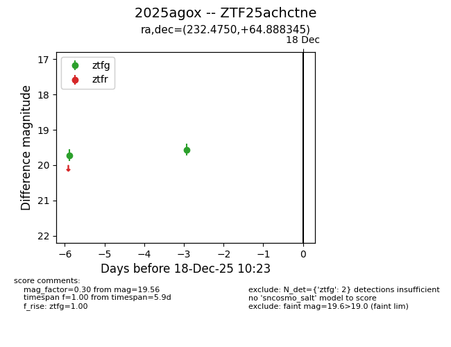
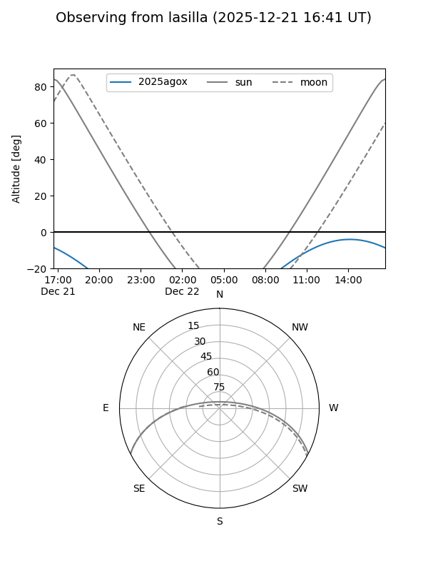
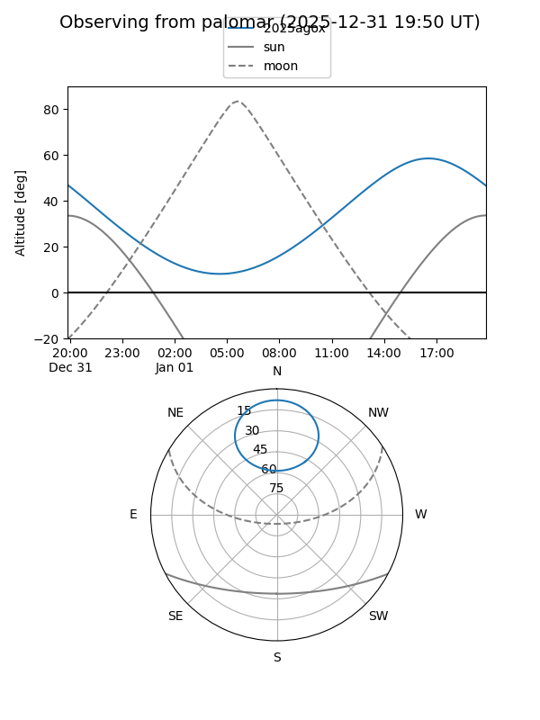

2025agox
Target 2025agox at 2025-12-31 16:59
Aliases and brokers:
FINK:
Lasair:
ALeRCE:
TNS:
YSE:
alt names
ZTF25achctne (ztf,fink_ztf)
2025agox (tns,yse)
Coordinates:
equatorial (ra, dec) = 232.4750,+64.88834
equatorial (HMS+DMS) = 15:29:54.00,+64:53:18.04
galactic (l, b) = (100.5403,+44.73591)
Flags:
Photometry:
last ztfg=19.29, ztfr=19.35
3 ztfg, 2 ztfr detections
Lightcurve

Visibility


Additional plots